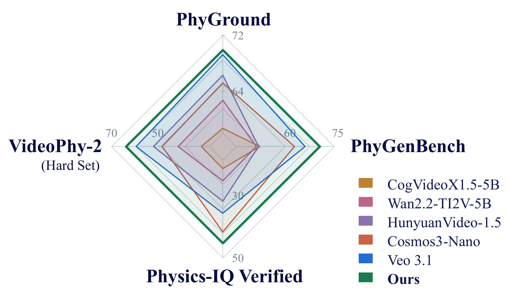

From descriptions to physical processes
Cosmos + Physis-Lang
with our full pipeline
Unnatural deformation
Gradual melting and spreading
PhyGenBench example · both clips play from 0 s at normal speed
Physical language makes the process explicit
Conventional caption
Butter melts as the temperature rises.
Physical language
CauseRising temperature supplies heat to the butter.
4 s
LawHeat drives melting; gravity makes the butter slump.
7.5 s
EffectThe solid shrinks as a shallow liquid pool expands.
Illustrative summaries
Refine shared guidelines, not individual video captions.
Shared guideline
PtPt+1
revised rule
Fixed captioner
weights frozen
schematic outputs
Physics-aware critic
correctness · coverage
PhysCapBench
held-out validation
246 videos
errors
revise
1 Apply
2 Evaluate
3 Refine
4 Validate
1Apply shared guidelines
One guideline instructs the fixed captioner across videos.
2Evaluate physical descriptions
The critic checks correctness and coverage.
3Refine the guideline
The agent uses recurring errors to improve the shared instruction.
4Validate and repeat
Evaluate on PhysCapBench; stop when gains saturate, keep the best.
Fixed Cosmos3-Nano · only the inference captions change (guideline Iter 1 → 9)
Caption quality improves
PhysCapBench F1
→
points
and
Video generation improves
PhyGenBench
→
points
Linked outcomes · F1 dips at Iter 2
Physical language selects training data
1Model physics
deficiencies
2Physics
tags
thermalfracturecloth
3Text-level
gallery matching
thermal
optics
fluid
cloth
Schematic
4Retrieve +
recaption
+
+
physical-language captions
››››
BenchmarkWISA+ RetrievedGain
VideoPhy-2 here is the full set (not Hard)
Gains across four physical benchmarks

Ours = Cosmos3-Nano with Physis-Lang · each axis has its own scale
Gains across backbones and scales
Mean gain across four benchmarks (points)
Cosmos 3 · three scales
Physically coherent video generation
1Represent physics
in language
Cause
↓
Law
↓
Effect
datatraininginference
2Evolve shared
guidelines
↻
critic feedback
PhysCapBench
3Drive targeted
data expansion
thermalcloth
improved generator
→→
Physical language connects representation, refinement, and data.